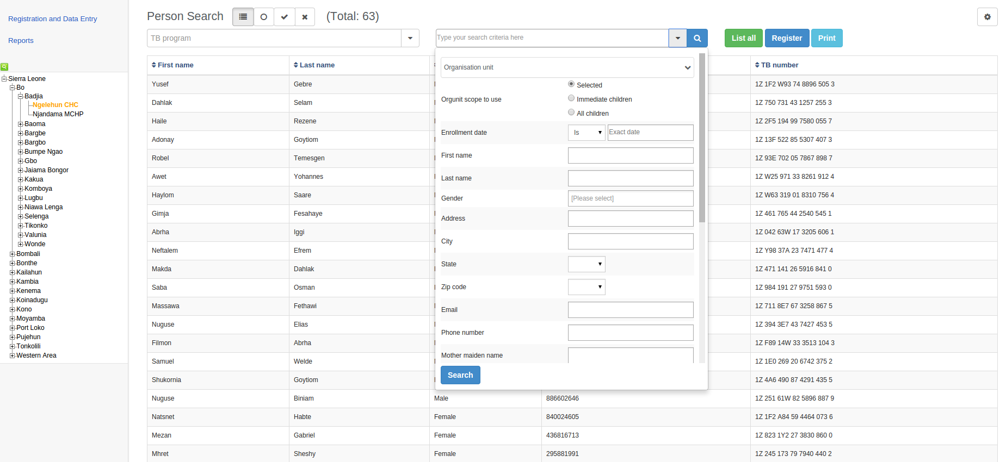

Example: searching/registration
|  |
There are two ways to find a TEI: simple and advanced search. You can also modify the search results list's layout and download the search results list in several formats.
In the Apps menu, click Tracker Capture.
(Optional) In the organisation unit tree in the left hand pane, select an organisation unit.
In the right hand search field, type your search criteria.
The search criteria could for example be a last name.
The simple search works by typing a free text in the search field. What is typed in the input box is applied across all attributes for partial match.
Click search.
A list of TEIs that match your search criteria displays.
If you have selected a program, you can filter the search results based on enrollment status:
Only those with active enrollment
Only those with completed enrollment
Only those with cancelled enrollment
Click a TEI.
The TEI dashboard opens.
Advanced search is conducted for the organisation units you select in left-hand side organisation tree. The left-hand side organisation tree is generated based on your assigned organisation units.
In the Apps menu, click Tracker Capture.
(Optional) In the organisation unit tree in the left hand pane, select an organisation unit.
(Optional) Select a program.
If a program is selected, advanced search allows you to search on the incident date if the program has one.
In the right hand search field, click the Advanced search arrow.
An expanded search form opens.
Fill in your search criteria(s).
Organisation unit
The tree displayed here depends on your user role.
If the user has role "Search Tracked Entity Instance in All Org Units" or "ALL", a tree with all available organisation units is provided other wise the tree displayed in advanced search is the same as the one on the left-hand side.
Whichever tree (or hierarchy of organisation units) is provided, if an organisation unit is selected in advanced search, the searching is conducted against this selected organisation unit and scope.
Date or enrollment: appears if you have selected a program
Date of birth: appears if you have selected a program
First name
Last name
Gender
Here, the match is exact match.
Click Search.
A list of TEIs that match your search criteria(s) displays.
If you have selected a program, you can filter the search results based on enrollment status:
Only those with active enrollment
Only those with completed enrollment
Only those with cancelled enrollment
Click a TEI.
The TEI dashboard opens.
You can search for a TEI from another organisation unit, outside your assigned organisation units. To do this:
Your user role must have "Search Tracked Entity Instance in All Org Units" or "ALL" assigned to it.
You must select an organisation unit in the organisation unit tree in the Advanced search form.
Create a TEI search results list, see sections ???
Click Download as and select a format:
XML
JSON
CSV